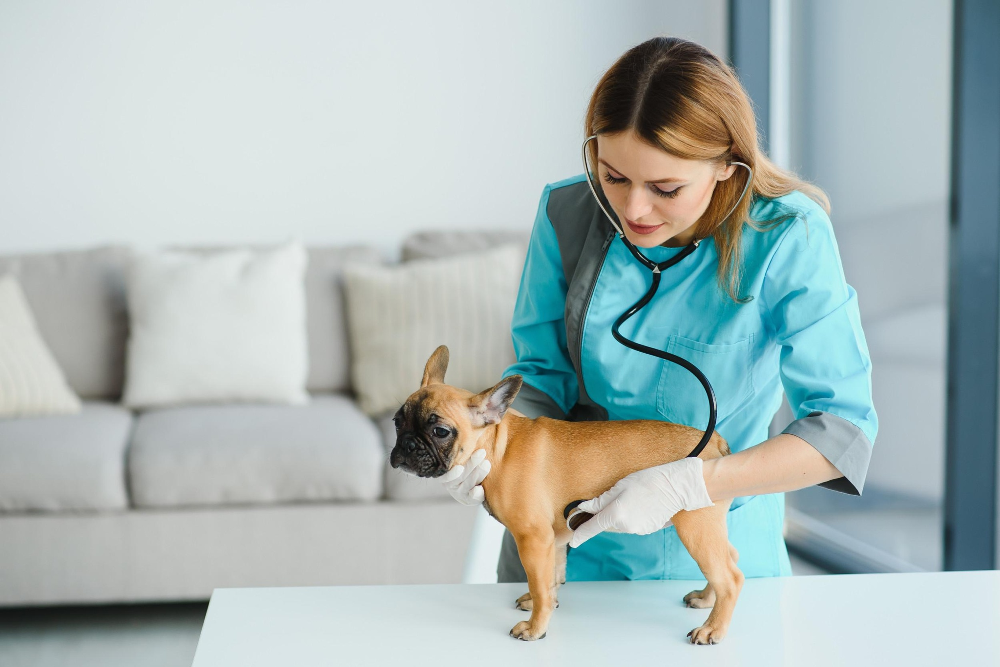

French Bulldog Protecting Puppy From Stethoscope Melts Hearts: 'Good Mama'A Frenchie called Persie has melted hearts all over the internet after a video of her worried about her owner using a stethoscope on her puppy went viral on social media. In the video, shared on TikTok in April by the dog's owner, under the username Divinefrenchbulldogs, the Frenchie can be seen trying to protect her puppy as her owner checks his breath using a stethoscope. She seems so worried that the owner uses it on her too, so she can show that she is not actually hurting her puppy. The heartwarming clip comes with a caption that says: "Watch mama totally relax after I put the stethoscope on her to show her I'm not hurting her baby." Followed by: "I do this with everything that touches her babies, and she never questions me again. I can't imagine being a puppy mill and having no connection to the mama dog and babies! Family bred is just so much better all the way around." Persie's owner, Tawnee Garcia, who became a breeder after struggling to find a reputable one three years ago while trying to get her son a dog, told Newsweek that while she's sure that everybody says that their dog is perfect, she truly feels like Persie is! "From her outstanding face and structure to her goofy and sweet personality, she is the best of all worlds. If you want to go for a walk or go play fetch, she will run her little heart out. If you want to just lay back and have a relaxing day, she will lay directly on your chest and lick your face until you can't breathe. She comforts you when you're sick, she senses when you're pregnant, and she absolutely loves company. She's an old soul, and we have a special connection like nothing I've ever experienced with another animal. "When it came time for her to have puppies, I was nervous. She isn't just a random dog having babies in my house, she's my sister.... or my child (I still haven't decided which.) For those who don't know what whelping newborn puppies consists of, it's very time-consuming. Flat-faced dogs need their noses sucked out after feedings in order to avoid aspirating and getting Pneumonia," she said. As she took care of Persie's puppies, the concerned dog mama was involved in every step of it. Garcia said: "She inspected [all the tools]. From the warm washcloth to help her potty them, to the nose sucker and the stethoscope, I used everything on her to show her that I'm only here to help. She'd still show her dominance by cleaning them while I held them. But I think the best part is that she'd always lick my face as soon as we were all finished. I felt like that was her way of telling me, 'Thank you for helping me, I trust you, and I love you." According to the American Kennel Club (AKC), for the first three weeks after puppies are born, their mother gives them her undivided attention and care, but as they grow and become more independent, the mother's role changes from one of support, direction, and protection to one that encourages self-reliance. "By eight weeks of age, puppies can usually handle going to a new home. The mother may initially feel lost without her litter and show signs of depression that could last a few days," the website states. The video quickly gained popularity on social media, attracting users from across TikTok. It has so far received over 991,100 views and 119,700 likes on the platform. One user commented: "She's so cute she really was like 'oh..oh.. that's it? Ok'" And Batman said: "So beautiful and peaceful she absolutely trusts you!" Another user added: "Such a good mama." River wrote: "They look like they have longer snouts than typical bulldogs are you breeding for healthier dogs?" And the owner answered: "We are breeding for healthier dogs, we're breeding to the AKC breed standard. No exotic colors & all health tests done including eyes." Another user, mars, commented: "I thought you were going to let her listen to baby's heart." And Destiny said: "You're so passionate and loving!" Stevie wrote: "She looks up like okay okay all good I suppose." And Jorja added: "The look into your eyes of trust and relief was beautiful!" Update 6/16/23, 6:51 a.m. ET: This article has been updated with comments from the original poster, Tawnee Garcia, and new pictures. Do you have funny and adorable videos or pictures of your pet you want to share? Send them to life@newsweek.com with some details about your best friend and they could appear in our Pet of the Week lineup. |
 |